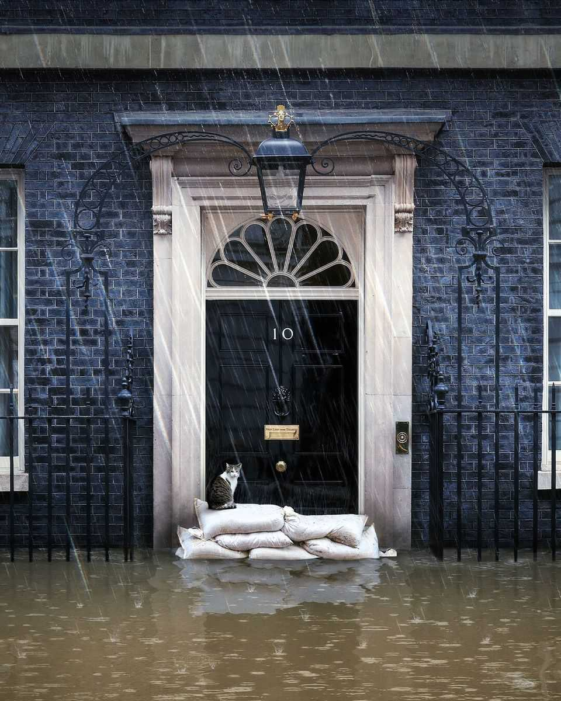

Leaders | Britain in crisis

In Britain political instability has become chronic. The story is grimly familiar. A once-triumphant prime minister’s poll ratings plummet and Downing Street turns into a bunker. A distant scandal suddenly becomes existential and the cabinet belatedly offers its support. A coup fizzles after an impassioned address to MPs in which the leader promises that everything will be different. But it isn’t. The prime minister’s authority is shot and the government limps on.
In a way the humiliation of Sir Keir Starmer, Britain’s fourth prime minister in four years, is greater than that of his Conservative predecessors. After a landslide win in 2024, he boasted of governing for a decade; but local elections in 12 weeks’ time may finish him off. The revelation that Peter Mandelson, his former ambassador to America, was appointed despite Sir Keir knowing of the length of his friendship with Jeffrey Epstein has shattered the prime minister’s image as dull, but competent and incorruptible. The aides who ran his swaggering operation have resigned; the cabinet secretary is leaving. A prime minister who defined himself as a constraint on the left-leaning parliamentary Labour Party now governs as its hostage.
After the drama of the past week, it is tempting to think things can only get better. Labour’s crisis, it might be hoped, will prove the catalytic moment Britain needs. Perhaps a brave young reformist will emerge from the ranks of Labour MPs and put the party’s vast governing majority to work in tackling Britain’s problems. Alas, the more likely path is drift. The Labour Party is preoccupied by self-preservation, and traumatised by how quickly voters have soured. With or without Sir Keir, it will retreat to its soft-left comfort zone, and muddle along the path of electoral least resistance. Party unity will trump boldness. For Britain, things will get worse before they get better.
The stasis in Downing Street contrasts with the urgency of the national situation. Problems ailing much of the rich world are found in abundance in Britain. Growth is not dreadful by European standards, but it is too meagre to give voters the living standards and public services they want. The cost of servicing Britain’s debt as a share of GDP has risen this decade to its highest since the late 1980s. Rearmament, an ageing population and an unreformed welfare system are straining the public finances. Voters know it: the share who think the state needs to shrink is higher than at any point since 1983. A declinist mood, redolent of Britain in the 1970s, hangs in the air.
Sir Keir’s election landslide was meant to escape this trap. Yet without a plan or the political capital to get much done, he has failed. Labour’s safety-first campaign promised small giveaways while ruling out big tax changes. Laws to empower trade unions and renationalise the railways were drawn up—but no intellectual spadework was done on reform to the civil service, regulated markets, public services or welfare. Many of his MPs came to Parliament expecting the money to flow, just as it eventually did under Labour in the 1990s. Rather than confront them, Sir Keir nodded along, and when they revolted at cuts to welfare and pensioner benefits, he backed down. His caution in opposition was termed the “Ming vase” strategy; as a project for government it has proved a hollow vessel indeed.
That is why a change of course now is so improbable. In an age of electoral fragmentation, when voters’ loyalties to old parties have broken down, governing on a low vote share is a fact of life. Calling an election today would be likely to cost hundreds of Labour MPs their seats. Hence the panic and timidity is likely to continue, whoever is in Number 10.
Powerful currents will pull Labour left. Sir Keir’s boasts of having “changed” the party by purging the hard left under Jeremy Corbyn mask how far its centre of gravity has shifted since the times of Sir Tony Blair. The leadership contenders most popular in the party—Andy Burnham, Ed Miliband and Angela Rayner—are all to the left of Sir Keir. So are the bulk of MPs, who came of age under the austerity of the 2010s. The Labour membership will pick the next leader; 89% of them think that taxes and spending should go up, a view shared by only one in five voters. And if Labour is to hold on to power and defeat the right-wing populists of Reform UK, it must attract voters who have defected to the populist-left Green Party.
Already Sir Keir has declared that “putting money in people’s pockets”—rather than economic growth—is his first priority. There may be greater scepticism of big tech (Palantir, a software firm, is the bogeyman du jour). The government may become more pro-European, which would be good but only if accompanied by a hard-headed realism that leads to productive negotiations.
The heaviest cost will be what is left undone. A mantra of “unity” and “inclusion” sounds benign, but makes for a lowest-common-denominator government in which everyone gets a veto. Welfare reform will be off the table. So will any overhaul of education or the civil service that irritates the unions. Planning, a bright spot, may sink back into its old ways because Labour members like nature and dislike developers. Above all, chronic instability means ignoring the public finances. Labour MPs are wont to declare that they “didn’t get into politics” to impose cuts on their voters. A prime minister who clings on to power by handing out treats is not running a government but an ice-cream van. Bond investors may lose patience.
Perhaps the coming years will breed a generation of Labour modernisers clear-eyed about Britain’s problems. In the meantime, voters will have to look elsewhere for renewal. Reform, which leads the polls, is disrupting the political order but offers little new thinking, beyond a mix of stale anti-immigration rhetoric and vague promises to slash the bits of the state its voters don’t use. Perhaps it will fall to the Conservatives, under Kemi Badenoch, to provide intellectual and economic renewal from the right. She is beginning to find her feet. Britons know their country needs to change and financial markets may force change. Therein lies a political opportunity. ■
For subscribers only: to see how we design each week’s cover, sign up to our weekly Cover Story newsletter.